若生活太无聊，不要灰心，我依旧是那个抢你人头辅助！欢迎来带我哦！

只狼
在《Sekiro: Shadows Die Twice》中你是“独臂之狼”，一个名誉不再、伤痕累累的忍者，一个从死亡边缘捡回一命的战士。你效忠守护继承古老血统的年轻皇子，与危险的苇名一族以及众多凶恶之徒为敌。年轻的皇子被抓走后，为挽回荣誉，你将不畏死亡，踏上危机四伏的征程。 探索生死冲突不断的16世纪后期，感受残酷的日本战国时代，在黑暗、扭曲的世界，与威胁生命的敌人对峙。活用义手装备各种致命武器，大显忍者身手，在血腥对抗中潜行、上下穿梭，与敌人正面激烈交锋。 复仇雪耻。夺回荣誉。巧妙杀敌

巫师3
巫师：狂猎》是一款情节驱动的开放世界角色扮演游戏。本作的故事发生在一个令人目眩神迷的奇幻宇宙里，玩家做出的每一个选择都意义重大，同时也要面对影响深远的后果。在《巫师》这个广袤的开放世界中，您可以尽情探索商业都市、海盗岛屿、危险的山隘和被遗忘的洞窟。

赛博朋克
《赛博朋克 2077》是一款开放世界游戏，故事发生在夜之城，权力更迭和身体改造是这里不变的主题。扮演一名野心勃勃的雇佣兵：V，追寻一种独一无二的植入体——获得永生的关键。自定义角色义体、技能和玩法，探索包罗万象的城市。您做出的选择也将会对剧情和周遭世界产生影响。这款游戏将在2020年4月16日发售。
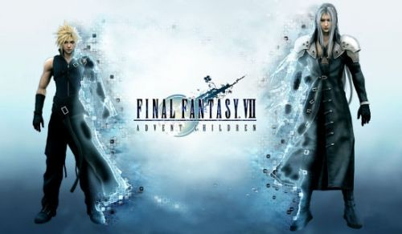
 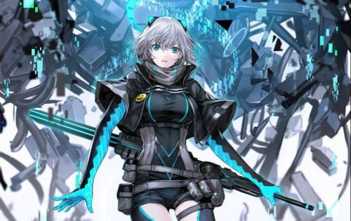
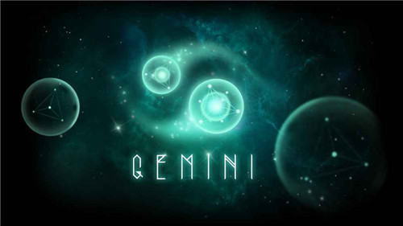
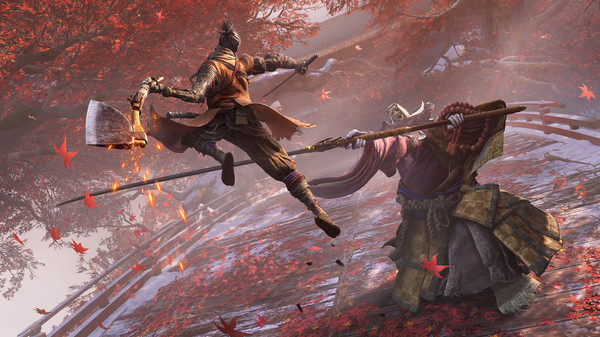
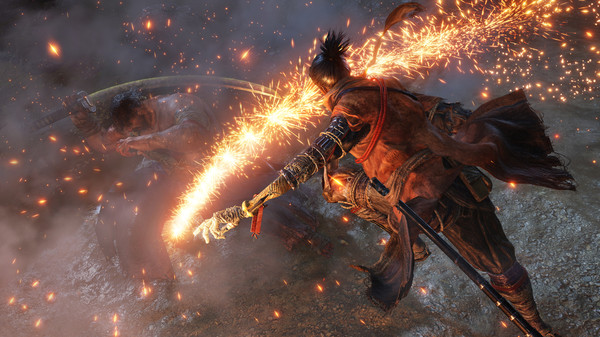
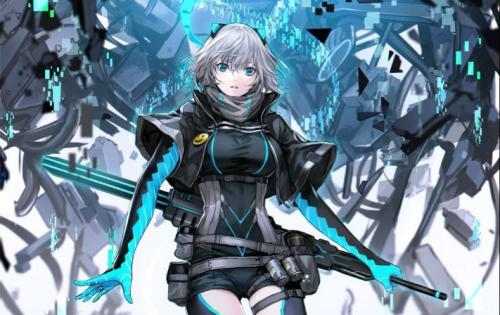
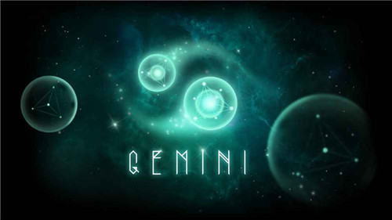
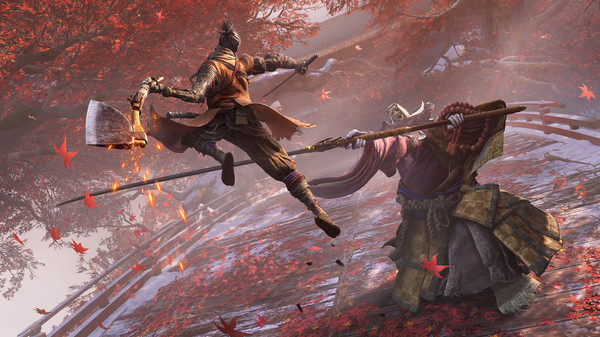
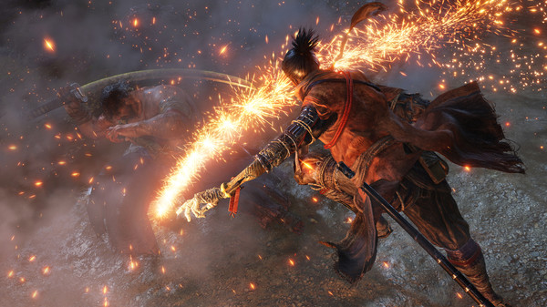
 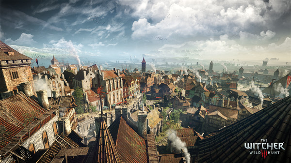
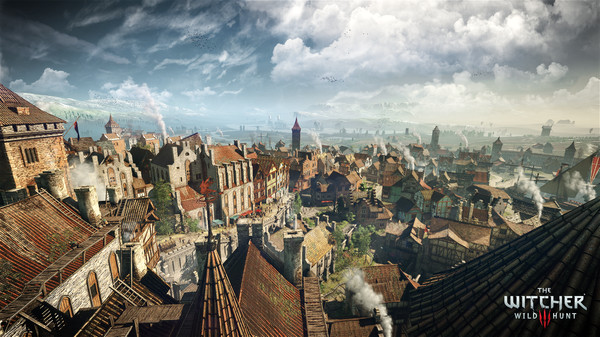
 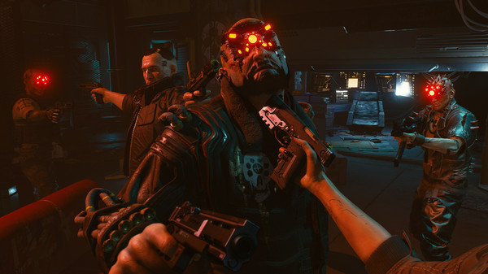
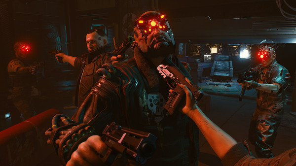
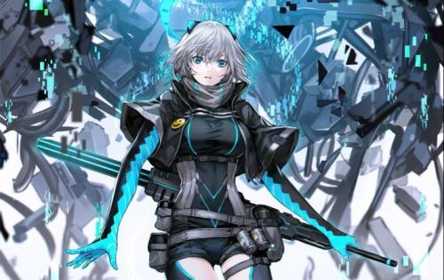
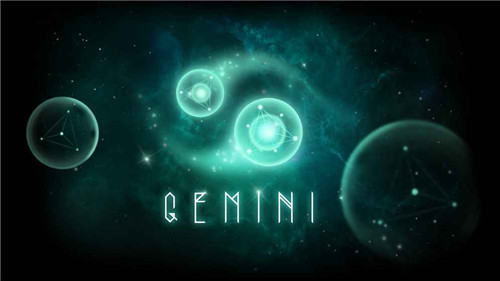
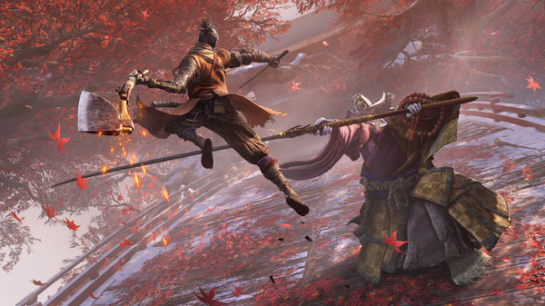
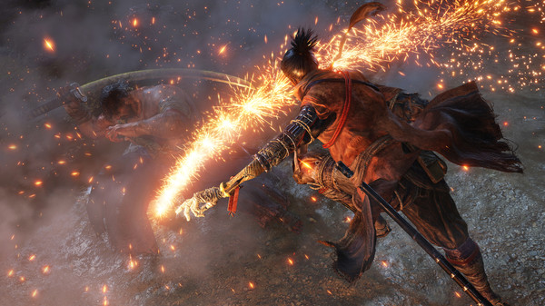
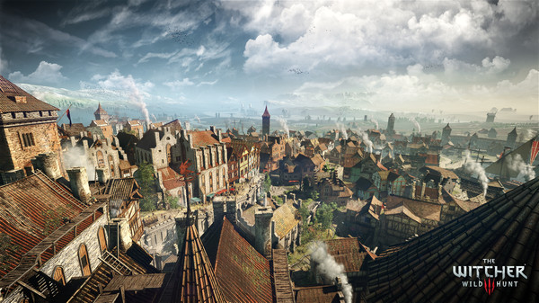
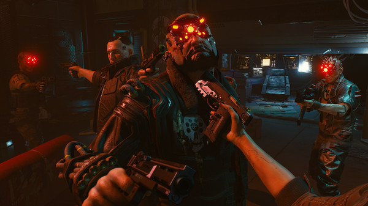